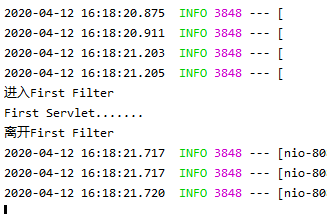

SpringBoot整合Web层技术
1.整合Servlet
论Servlet是什么
Java Servlet 是运行在 Web 服务器或应用服务器上的程序，它是作为来自 Web 浏览器或其他 HTTP 客户端的请求和 HTTP 服务器上的数据库或应用程序之间的中间层。
使用 Servlet，您可以收集来自网页表单的用户输入，呈现来自数据库或者其他源的记录，还可以动态创建网页。
实现Servlet的方式有两种：注解实现 和 方法实现，其中注解实现简单易行，方法实现需要对每一个都进行配置，较为繁琐，这里选择注解实现
a.创建Servlet包儿
不用多说吧....
b.创建Servlet类
我使用的名称是"FirstServlet"，写入代码如下
package com.example.demo.Servlet;
import javax.servlet.annotation.WebServlet;
import javax.servlet.http.HttpServlet;
import javax.servlet.http.HttpServletRequest;
import javax.servlet.http.HttpServletResponse;
@WebServlet(name = "FirstServlet", urlPatterns = "/first")
public class FirstServlet extends HttpServlet {
// 重写doGet方法
public void doGet(HttpServletRequest request, HttpServletResponse response){
System.out.println("First Servlet.......");
}
}
注意该类继承于 HttpServlet
这里使用了 @WebServlet 注解，name属性对应Servlet名称，url参数为请求
c.修改启动类
在启动类中的 @SpringBootApplication 下面加入注解
@ServletComponentScan
这个注解不仅仅用于扫描Servlet，对于后文的 Fliter 和 Listener 同样适用
d.看一下结果吧~

2.整合Fliter
再来小科普：
Filter，过滤器，顾名思义，即是对数据等的过滤，预处理过程。它不仅能预处理数据，只要是发送过来的请求它都是可以预处理的，同时，它还可以对服务器返回的响应进行预处理，这样，大大减轻了服务器的压力。例如，实现URL级别的 权限访问控制、过滤敏感词汇、压缩响应信息等一些高级功能。
a.创建Fliter包儿
b.创建Fliter类
我这里的名字仍然是"FirstFliter"
代码如下：
package com.example.demo.Filter;
import javax.servlet.*;
import javax.servlet.annotation.WebFilter;
import java.io.IOException;
// 这个导包注意不要错！
// 指向拦截位置的注解
@WebFilter(filterName = "FirstFilter",urlPatterns = "/first")
public class FirstFilter implements Filter {
@Override
public void init(FilterConfig filterConfig) throws ServletException {
}
@Override
// 过滤拦截
public void doFilter(ServletRequest servletRequest, ServletResponse servletResponse, FilterChain filterChain) throws IOException, ServletException {
System.out.println("进入First Filter");
filterChain.doFilter(servletRequest,servletResponse);
System.out.println("离开First Filter");
}
@Override
public void destroy() {
}
}
这里有几个重要的注意事项
1.首先导包不要导错，这里有好几个重名包儿
2.在实现Fliter接口的时候可以直接快捷键 Alt+Enter 自动补全下面的重写方法
@WebFliter注解的使用方法和前面类似，不再赘述
c.修改启动类
注意这里对启动类的处理和上一步是一样的，不用再次添加注解
d.测试一下
3.整合Listener
小科普：
Listener，监听器用于监听web应用中某些对象、信息的创建、销毁、增加，修改，删除等动作的发生，然后作出相应的响应处理。当范围对象的状态发生变化的时候，服务器自动调用监听器对象中的方法。常用于统计在线人数和在线用户，系统加载时进行信息初始化，统计网站的访问量等等。
a.创建Listener包儿
b.创建Listener类
我这里的名字仍然是"FirstListener"
代码如下：
package com.example.demo.Listener;
import javax.servlet.ServletContextEvent;
import javax.servlet.ServletContextListener;
import javax.servlet.annotation.WebListener;
@WebListener
public class FirstListener implements ServletContextListener {
public void contextDestroy(ServletContextEvent event){
}
public void contextInitialized(ServletContextEvent event){
System.out.println("Listener....Init....");
}
}
这里没什么重要的注意事项
c.修改启动类
注意这里对启动类的处理和上上一步也是一样的
d.测试一下
在工程编译的时候就会出现